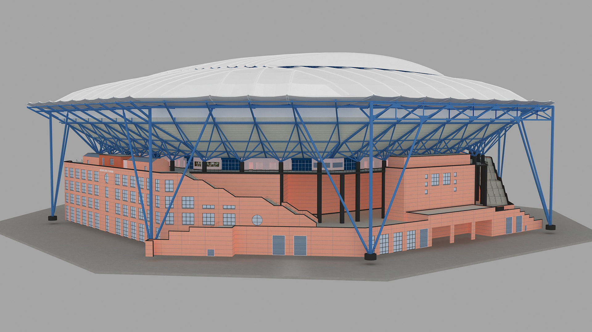

The objectives, challenges, and goals I am actively working toward.
Every journey has an active quest log. These missions represent the
areas where I am currently focused on learning, improving, and making
progress. From advancing my education and professional experience to
building stronger development skills, each objective contributes to
the larger direction I am working toward.
Mission Status
Active
My current focus is centered on completing my education, continuing to
grow professionally, expanding my technical abilities, building
meaningful projects, and preparing for the next stage of my career.
Main Quest
In Progress
Complete My Software Development Degree
Continue progressing through my Bachelor of Science in Software
Development at Grand Canyon University while strengthening my
foundation in programming, algorithms, data structures, databases,
web development, and application development.
Primary Objective:
Successfully complete my degree while continuing to turn classroom
concepts into practical development experience.
Career Quest
Active
Continue Growing as a BIM Coordinator
Continue supporting Capital Projects and Engineering while expanding
my experience with BIM workflows, digital coordination, asset
documentation, drawing analysis, surveying support, and technical
project coordination.

BIM Coordination • Capital Projects & Engineering
Current Focus:
Revit, AutoCAD, Navisworks, BIM coordination, digital documentation,
asset data, and technical problem-solving.
Developer Quest
Active
Build Stronger Development Skills
Continue strengthening my programming foundation through coursework,
hands-on practice, personal projects, version control, and modern
development tools.
HTML
CSS
JavaScript
Bootstrap
jQuery
Git / GitHub
Java
SQL
C#
React
Development Goal:
Build increasingly capable projects that transform what I learn into
practical software development experience.
Learning Quest
Active
Keep Learning Beyond the Classroom
Continue exploring technologies, tools, and development methods that
improve the way I learn, solve problems, organize ideas, and build
software.
Artificial Intelligence
Modern Web Development
Software Engineering
Developer Tools
AI-Assisted Development
Personal Projects
Professional Growth Quest
Active
Continue Developing as a Professional
Technical knowledge is only one part of professional growth. I am
also continuing to strengthen the skills that help me communicate,
collaborate, lead, adapt, and contribute effectively within a team.
Current Focus:
Communication, leadership, teamwork, organization, initiative,
consistency, adaptability, and continuous learning.
Ultimate Objective
Mission Continues
Continue Evolving My Career
My long-term goal is to continue combining technology, engineering,
programming, and problem-solving while moving toward increasingly
software- and technology-focused opportunities.
Next Stage:
Complete my degree, expand my technical experience, build meaningful
projects, strengthen my portfolio, and remain open to new
opportunities across software and technology.
Quest Summary
Progress Over Perfection
Not every mission is completed at the same speed. The objective is to
keep moving forward, learn from each checkpoint, build on what I
already know, and continue developing the skills and experience that
will shape the next chapter.